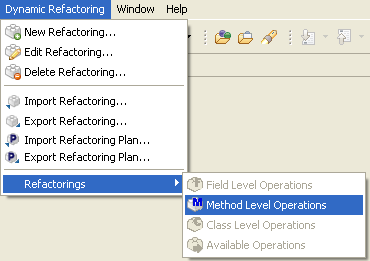
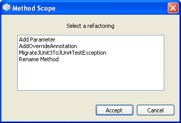
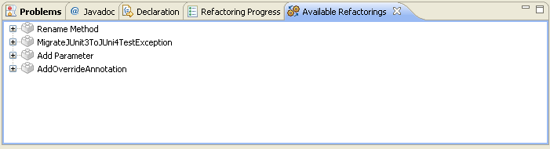

Running Refactorings: Method-Scope OperationsRunning Refactorings: Method-Scope Operations
Running Refactorings: Method-Scope OperationsRunning Refactorings: Method-Scope OperationsWhenever you select a method from a class in the tree on the Package Explorer view, method-scope refactorings become available. In order to run any of them, you have three choices.
Right-click on the method you want to apply the refactoring on, and select the popup-menu item Dynamic Refactoring > Method Level Operations.

Inside Eclipse select the menu item Dynamic Refactoring > Refactorings > Method Level Operations.

Once you tell the plugin you want to run a refactoring on the selected element, it starts building the internal model it will use. When the process is over, a selection window with the available method-scope refactorings will open.

Method-scope available refactorings
It is now that you must select the refactoring you would like to apply. When you have already chosen one,
push the Accept button in order for the refactoring process to start.
When you select a class from an Eclipse view, the "Available Reactorings" view update its contents with the method-scope refactorings. Then you have to double-click one of them to start the ejecution of one of the refactorings.

See the related task down below for more detailed info on how to configure and run refactorings.